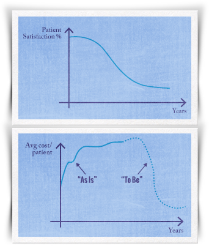

Lesson 4
Identifying Policy Options
Selecting Potential Policy Options
Developing New Policy Options
When developing new policy options, it is important to consider a broad, systemic perspective to avoid creating policies with good intentions but possible unintended consequences. One tool that has been used by some policy makers as a way of thinking about policy is the six-question framework. The questions making up this framework are:
- What is the trend of the public health problem? What is the shape of this trend over time?
- Who are the stakeholders concerned about this trend?
- Why is this trend happening? (What is the cause? What is responsible?)
- Where is there policy leverage to address the underlying cause of the trend?
- How might the policy positively or negatively impact health status, health spending, the health care system, and health equity?
- When would you see an improvement in health status or other indicators (i.e., spending, services)?
It may be helpful to ask yourself these questions as you are gathering information on the public health problem and formulating ideas about which policy options may be the most appropriate.


Audio
Closed Caption
Page 10 of 13
Select the Lessons from the Field icon to learn more. Select the Next arrow to continue.
Exit